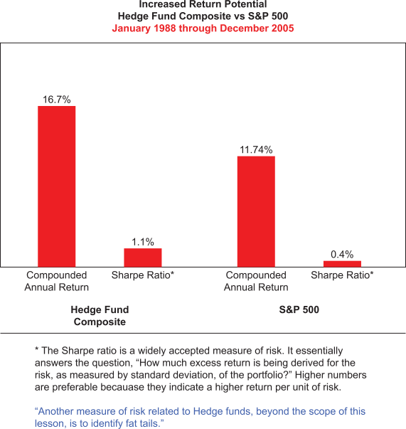

As defined previously, one of the reasons for investing in hedge funds is the increased return potential that they offer relative to traditional pooled investment vehicles. The chart below clearly illustrates that equity hedge funds have historically outperformed the S&P 500 by a wide margin, this during a period when a vast majority of equity funds underperformed relative to this benchmark.
Although historical returns can be important indicators as to the effectiveness of a particular investment strategy, past performance alone is not enough to substantiate making a commitment to a hedge fund. It is vital that investors understand the approach the manager uses to generate the returns in the portfolio. While there are countless investment approaches being employed in managing hedge funds today, it is important that you be able to give potential investors a clear understanding of how the greater investment flexibility afforded to hedge funds can translate into greater return potential. It is also important that individual investors take note that hedge funds often seek realized gains to maximize pre-tax rates of return without consideration of the taxable nature of the returns.
To help you in explaining this benefit to clients, consider the following examples.
In the late 1990's, traditional equity managers, with restrictions on their ability to use leverage, could only seek to pick the best stocks to participate in the bull market, while hedge fund managers often used leverage in their portfolios to generate higher rates of return. Likewise, when market conditions deteriorated, hedge funds could employ a wider range of strategies than traditional investment vehicles to protect, and even grow, capital. While traditional managers could only increase their cash position to preserve capital, hedge fund managers had the flexibility to use the market decline as an opportunity, establishing short positions to further protect capital and potentially produce positive returns in the portfolio.
Note that while any hedge fund manager had the flexibility to use shorting and other investment strategies during a bear market, this does not mean they actually did so or were always effective when they did. Just as with any investment strategy, the returns are directly related to the strategy being used in the hedge fund itself, as well as the skill of the manager in implementing the strategy. There is never a guarantee of a fund delivering positive returns or protecting capital in any market environment.
Although all hedge funds are afforded the same degree of investment flexibility, it is important to keep in mind that all hedge fund managers are not equal. No different from the fact that all mutual funds do not produce the same return profiles, hedge funds managers returns also vary dramatically. They have the flexibility to produce returns through various strategies not available to traditional portfolio managers, but they still have to accurately predict when to employ each strategy to add value.
